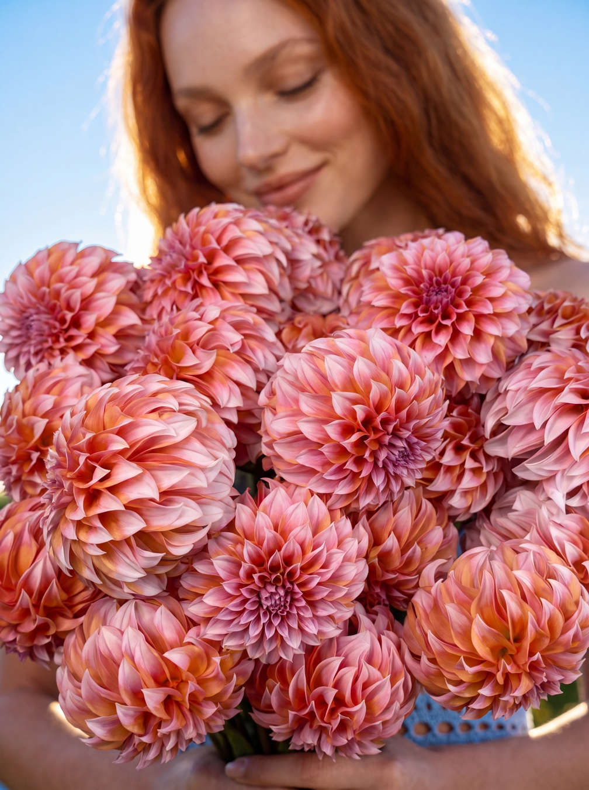
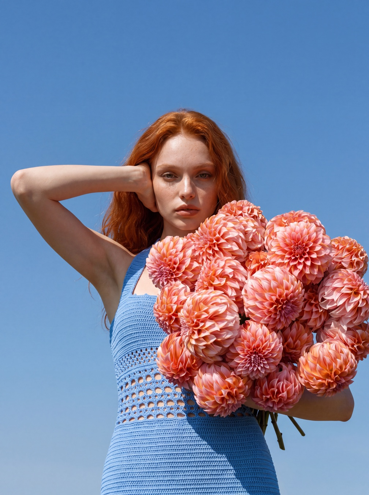
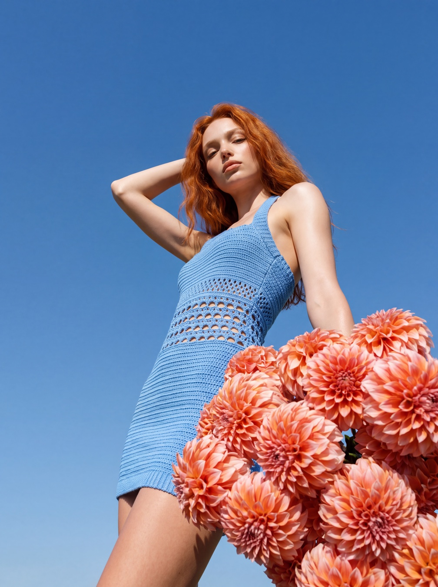
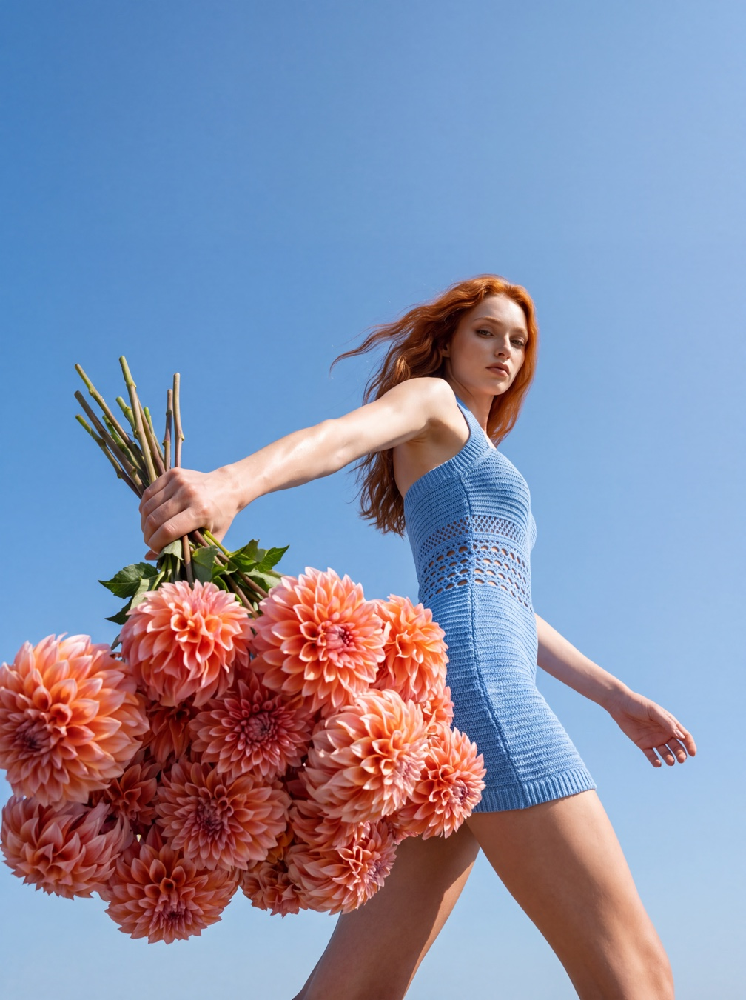
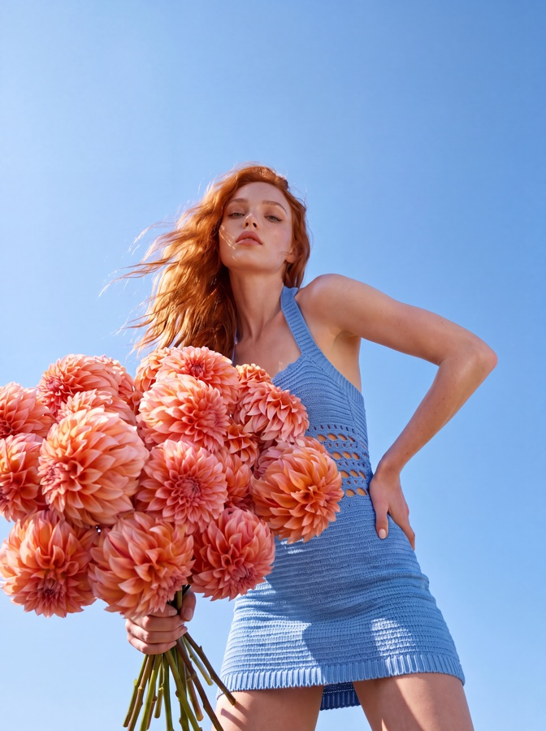

Уличная фотосессия в цветочном — всегда лотерея. Погода, которая передумала. Свет, который ушёл, пока собирались. Модель, у которой именно сегодня не получилось. И букет, который вянет в машине по дороге на локацию. Эту серию мы сняли, не выходя из-за компьютера: настоящий букет георгинов, своя AI-модель — и улица, которую придумала нейросеть.
Магазину нужна не картинка, а серия: пост, сторис, обложка, карточка — соцсети и сайт едят кадры пачками. Один красивый кадр отработает один раз, серия из одной сцены выглядит как настоящая фотосессия и кормит площадки несколько недель.
Заказывать под это выездную съёмку — значит сводить в одну точку модель, фотографа, локацию, погоду и свежий букет. Любая из пяти переменных срывается — и переносится вся история.
Здесь та же серия собирается из того, что у магазина уже есть: реального букета и один раз созданной модели. Улицу, небо и солнце добавляет нейросеть — они единственные в кадре, кого не жалко придумать.
Порядок тот же, что и всегда: сначала настоящий товар, потом постоянная героиня, и только в конце — придуманное окружение. Если начать с окружения, получится красивая картинка, к которой нечего продавать.

Серия начинается не с промта, а с товара. Букет георгинов собирается и фотографируется как есть: сорта, сборка, пропорции — всё в кадре реальное.
Это главное правило всех разборов: нейросеть меняет окружение, но не цветы. Покупатель придёт за букетом с картинки — и должен получить именно его.
Правило: букет из магазина, не из нейросети.

Героиня создана по методу из разбора «Своя модель»: один раз сгенерирована, апскейлена и описана паспортом из восьми ракурсов.
Паспорт прикладывается к каждой генерации, поэтому лицо и фигура держат форму от кадра к кадру. Без него к третьему кадру в серии снималась бы другая девушка.
Правило: один паспорт — все съёмки.

На всю серию — одна сцена: летнее небо, прямое солнце, лёгкий ветер. И один образ: голубое вязаное платье, никаких переодеваний между кадрами.
Фон — только небо, и это осознанно. Вывески, окна, машины и прохожие — места, где генерация чаще всего прокалывается. Чем меньше придуманной среды, тем чище серия.
Правило: одна сцена, один образ, один свет.

Одна сцена — это не один кадр. Серия снимается планами, как у живого фотографа: общий снизу, портрет в лоб, движение с разлетевшимися волосами, макро с фактурой лепестков.
Каждый ракурс задаётся отдельной генерацией, а паспорт и единая сцена склеивают их в одну фотосессию. Когда промты написаны хорошо, кадр получается с первого раза — перегенерация нужна редко. Из готовых вариантов кадры отбираются глазами — об этом ниже.
Улицу можно придумать,
букет — нельзя
Честный список того, на чём ломается уличная серия. Всё — из этой конкретной съёмки, не из теории.
Из сгенерированных кадров два оказались почти копиями: та же поза, тот же букет, разница — в пальцах и паре лепестков. Нейросеть охотно повторяется, и количество генераций не превращается в разнообразие само по себе. Серию спасает отбор глазами: близнецов разводим — один в серию, второй в архив.

Букет, снятый под тёплой лампой магазина, нельзя просто перенести в полдень на солнце — тени и блики не совпадут, и глаз это считывает раньше, чем голова успевает объяснить почему. Свет на цветах и свет сцены должны жить в одном времени суток.
Уличная серия продаёт настроение и бренд: её место — соцсети, обложки, реклама. Карточки товара она не заменяет — там нужен ровный свет, нейтральный фон и одинаковая подача всей линейки. Это два разных инструмента, и путать их не стоит.
Промты сцены и каждого ракурса, порядок работы с паспортом модели и готовая связка целиком — в картотеке.
Нет. Улица, небо и солнце сгенерированы нейросетью, модель создана заранее и держится на паспорте ракурсов. Настоящий в кадре — букет: он сфотографирован как товар, и именно его можно купить.
Соцсети и сайт едят кадры пачками: пост, сторис, обложка, карточка. Серия из одной сцены выглядит как настоящая фотосессия и работает несколько недель, а один кадр — один раз.
Да, если букет настоящий и сфотографирован как товар. Нейросеть переносит его в сцену, но не должна придумывать состав: сорта, сборка и пропорции остаются реальными.
Она создана по методу из разбора «Своя модель»: генерация, апскейл и паспорт из восьми ракурсов. Такую героиню создают один раз, а дальше она снимается во всех сериях — в карточках товара, на улице, в сезонных витринах.